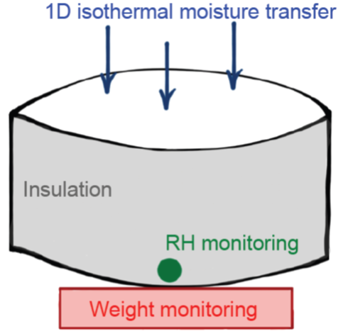
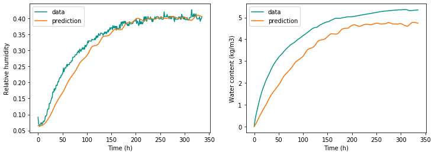
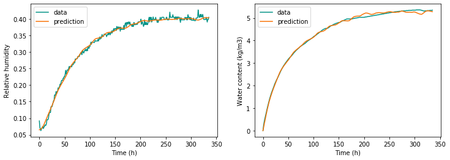

This page shows an application of a curve fitting algorithm for the estimation of moisture transfer properties of a porous material.
The tutorial uses the hamopy Python package for one-dimensional heat, air and moisture transfer in porous media. The inverse problem is then simply solved by thscipy’s curve_fit method.
Experimental setup
The target is to estimate the water vapour permeability and sorption isotherm of a material sample from transient measurements of its weight and internal relative humidity.

A cylindrical porous sample is placed on a scale within a chamber of controlled relative humidity. The mass uptake and the weight gain of the sample are continously recorded after a stepwise change in ambient relative humidity. The target of the problem is to use these measurements to find the water vapour permeability and sorption isotherm of this material.
More information on the experimental setup is given in this paper:
The measurements used as input and output of the model are given in the hygric_data.txt file.
import numpy as np
import pandas as pd
# Sample size
h = 0.08 # height
D = 0.111 # diameter
# Measurements
df = pd.read_csv('data/hygric_data.txt', delimiter = '\t')
df.head()
| Time (s) | T ext | RH ext | T | RH1 | Mass (g) | |
|---|---|---|---|---|---|---|
| 0 | 0.0 | 291.52 | 0.4000 | 296.62 | 0.0917 | 134.83 |
| 1 | 3600.0 | 291.64 | 0.4123 | 294.11 | 0.0723 | 135.02 |
| 2 | 7200.0 | 292.15 | 0.4053 | 294.11 | 0.0669 | 135.17 |
| 3 | 10800.0 | 292.65 | 0.4167 | 294.61 | 0.0624 | 135.29 |
| 4 | 14400.0 | 293.15 | 0.4133 | 295.11 | 0.0678 | 135.39 |
We thus have measurements of ambient temperature and humidity, weight of the sample and humidity at the bottom of the sample.
First run of hamopy
Before defining an objective function for the optimisation algorithm that will search the optimal material parameters, let us show with one simulation how the hamopy package works.
One simulation of coupled heat, air and humidity transfer with hamopy is called with this line:
result = calcul(mesh, clim, init, time)
The method calcul calls the main algorithm, and needs four objects as arguments:
meshcontains all information regarding the material definition and spatial discretisation of the domainclimstores boundary conditionsinitdefines initial conditionstimespecifies the time of simulation, time step size, etc.
The results are stored in an object that lets users access to profiles of temperature, humidity and moisture content.
mesh: material definition and discretisation
The first step into specifying the model inputs is the choice of material. In the following block, we are defining a Material called wood_fibre, and setting its heat and moisture transfer properties. There are several models available for each property, described in the user guide.
Then, the material sample itself is defined as one layer of this material, with size $h$ and a certain number of finite elements. This can be refined in case of convergence issue.
from hamopy.classes import Material, Mesh
# Isolant hygroscopique proche de la fibre de bois
wood_fibre = Material('isolant', rho = 200., cp = 2000.)
# Setting heat conductivity and its dependency to moisture content and temperature
wood_fibre.set_conduc(lambda_0 = 0.05,
lambda_m = 0.5,
lambda_t = 0.1e-3)
# Setting the sorpion isotherm
wood_fibre.set_isotherm('slope', **{"HR" : [0.25, 0.5, 0.75],
"XI" : [17, 19, 47] })
# Setting the vapour permeability
wood_fibre.set_perm_vapor('interp', **{"HR" : [0.25, 0.75],
"dp" : [2e-10, 5e-10] } )
# Defining the mesh object as one layer of material, with size h
mesh = Mesh(**{"materials" : [wood_fibre],
"sizes" : [h],
"nbr_elements" : [23] })
clim: boundary conditions
Boundary conditions are specified as a list of two Boundary objects. There are a few options to specify each boundary, whether they have constant or variable conditions. One of these options is to directly pass the measurement file and the name of the labels. Other options are described in the documentation.
from hamopy.classes import Boundary
# The first bounday is open, with a fixed transfer coefficient.
clim1 = Boundary('Fourier',**{"file" : 'data/hygric_data.txt',
"time" : "Time (s)",
"T" : "T ext",
"HR" : "RH ext",
"h_m" : 5e-9})
# The second boundary is insulated: transfer coefficients are zero.
clim2 = Boundary('Fourier',**{"file" : 'data/hygric_data.txt',
"time" : "Time (s)",
"T" : "T ext",
"HR" : "RH ext",
"h_t" : 0,
"h_m" : 0})
clim = [clim1, clim2]
Initial conditions and time step size
The last two objects to be provided to the algorithm are: a dictionary of initial conditions, and a Time objects that contains the information for time discretisation. The time step size can be chosen as constant, or as adaptative in order to be automatically refined when convergence fails. In the following, the latter option was chosen.
from hamopy.classes import Time
# Initial conditions are uniform here
init = {'T' : df['T'][0],
'HR' : 0.065}
# Variable time step size, with a minimal and maximal possible size
time = Time('variable',**{"delta_t" : 600,
"t_max" : df['Time (s)'].max(),
"iter_max" : 12,
"delta_min": 1e-3,
"delta_max": 3600 } )
First run and comparison with the data
We can now run a calculation of moisture transfer in the sample, in all the conditions that we just defined.
from hamopy.algorithm import calcul
from hamopy.postpro import evolution, distribution
import hamopy.ham_library as ham
# The simulation
result = calcul(mesh, clim, init, time)
After the simulation is done, results can be retrieved by using two functions available in the postpro module:
evolutionreturns the evolution in time of one quantity in one location.distributionreturns the distribution across the sample of one quantity in one time coordinate.
We use the former to draw the evolution of relative humidity at the bottom of the sample, which we will compare with measurements. We use the latter to calculate the total moisture content of the sample at each time step, which we will compare with the measured evolution of its weight.
x_out = np.linspace(0, h)
t_out = df['Time (s)']
# Evolution of humidity, at the coordinate h (bottom of the sample)
H = evolution(result, 'HR', h, t_out)
# Total moisture content at each time step
W = np.zeros(len(t_out))
for i, t_ in enumerate(t_out):
# Distribution of humidity, temperature and moisture content
hum = distribution(result, 'HR', x_out, t_)
tem = distribution(result, 'T', x_out, t_)
w_distrib = wood_fibre.w(ham.p_c(hum,tem), tem)
# Integrating the moisture content over the entire sample
W[i] = np.trapz(y = w_distrib, x = x_out)
# Integrating over the volume of the sample
W *= W * np.pi*D**2/4*1000 # pour passer de (kg/m2) a des (g)
W -= W[0]
import matplotlib.pyplot as plt
%matplotlib inline
teal = '#029386'
orange = '#F97306'
plt.figure(figsize=(12,4))
plt.subplot(121)
plt.plot(t_out/3600, df['RH1'], label='data', color=teal)
plt.plot(t_out/3600, H, label='prediction', color=orange)
plt.xlabel('Time (h)')
plt.ylabel('Relative humidity')
plt.legend()
plt.subplot(122)
plt.plot(t_out/3600, df['Mass (g)'] - df['Mass (g)'][0], label='data', color=teal)
plt.plot(t_out/3600, W, label='prediction', color=orange)
plt.xlabel('Time (h)')
plt.ylabel('Water content (kg/m3)')
plt.legend()
plt.show()

Clearly, the simulation does not match measurements: we have greatly underestimated the moisture permeability. The moisture capacity, or sorption isotherm, might be in a correct range, although the experiment does not last long enough to reach a steady state.
Hygric characterisation by curve fitting
Now that an example of simulation with hamopy was demonstrated, we can use this workflow to estimate the values of material properties that will let the model output best match the data.
Objective function
We first need to define a cost function, which will simulate the experiment using a set of parameters. In the definition of the material above, we defined the dynamics of moisture transfer with six values :
- the surface transfer coefficient
h_m. - the moisture permeability, defined by two values
dp_1anddp_2from which a profile is extrapolated. - the sorption isotherm, defined by three values
xi_1,xi_2andxi_3from which a profile is extrapolated.
These properties form a list of six unknown parameters that will be estimated by the optimisation algorithm. They are passed as arguments of a simulation function which will return the evolutions of humidity and moisture content in the sample. This function will then be fitted to match the data.
Since we are using two types of measurements for curve fitting (relative humidity and moisture content), they should be scaled in order to have comparable ranges, and therefore a comparable weight in the calculation of the objective function (the sum of squared residuals).
scale_H = 0.01
scale_W = 0.1
def simulation(df, h_m, dp_1, dp_2, xi_1, xi_2, xi_3):
# Some parameters are scaled so that they all have similar ranges
h_m *= 1e-9
dp_1 *= 1e-10
dp_2 *= 1e-10
# Changing the transfer coefficient in the boundary condition
clim[0].data['h_m'] = h_m
# Defining the material and the mesh object
m = Material('isolant', rho = 200., cp = 2000.)
m.set_conduc(lambda_0 = 0.05, lambda_m = 0.5, lambda_t = 0.1e-3)
m.set_perm_vapor('interp', **{"HR" : [0.25, 0.75],
"dp" : [dp_1, dp_2] } )
m.set_isotherm('slope', **{"HR" : [0.25, 0.5, 0.75],
"XI" : [xi_1, xi_2, xi_3] } )
mesh = Mesh(**{"materials" : [m],
"sizes" : [h],
"nbr_elements" : [23] })
# Simulation
res = calcul(mesh, clim, init, time)
if res['t'].max() < df['Time (s)'].max():
# If the simulation has been interrupted before the end, return zeros
print('One of the simulations has failed \n')
return np.zeros(2*len(df))
else:
# Output 1: relative humidity at the bottom of the sample
H = evolution(res, 'HR', h, df['Time (s)'])
# Output 2: weight gain of the sample
x_out = np.linspace(0, h)
W = np.zeros(len(df))
for i, t_ in enumerate(df['Time (s)'].values):
# Distribution of humidity, temperature and moisture content
hum = distribution(result, 'HR', x_out, t_)
tem = distribution(result, 'T', x_out, t_)
w_distrib = m.w(ham.p_c(hum,tem), tem)
# Integrating the moisture content over the entire sample
W[i] = np.trapz(y = w_distrib, x = x_out)
# Integrating over the surface of the sample
W *= np.pi*D**2/4*1000
W -= W[0]
# Scaling both outputs to similar ranges
H /= scale_H
W /= scale_W
return np.concatenate((H, W))
Curve fitting
Now we just have to start the algorithm for curve fitting. It is the curve_fit method of the scipy.optimize package, and pretty simple to operate. It returns the least square estimator as popt and its covariance matrix as pcov.
These few lines may take a few minutes to run, depending on whether the initial guess is accurate or not.
# Initial guess
p_init = [5, 2, 5, 15, 20, 50]
# Data with which to match the model output
y_rh = df['RH1'] / scale_H
y_w = (df['Mass (g)'] - df['Mass (g)'][0]) / scale_W
data_y = np.concatenate((y_rh.values, y_w.values)) # output to be fitted on
# Fitting
from scipy.optimize import curve_fit
popt, pcov = curve_fit(simulation, df, ydata=data_y, p0 = p_init)
Some simulations may fail because no bounds were passed to the search algorithm. Nevertheless, it should converge to reasonable values.
Plotting results
In order to visualise how well the model fits the data, let us run one last simulation with the optimal parameters as input, and plot its results versus measurement data.
print(popt)
opt_calc = simulation(df, popt[0], popt[1], popt[2], popt[3], popt[4], popt[5])
opt_H = opt_calc[:len(df)] * scale_H
opt_W = opt_calc[len(df):] * scale_W
plt.figure(figsize=(12,4))
plt.subplot(121)
plt.plot(t_out/3600, df['RH1'], label='data', color=teal)
plt.plot(t_out/3600, opt_H, label='prediction', color=orange)
plt.xlabel('Time (h)')
plt.ylabel('Relative humidity')
plt.legend()
plt.subplot(122)
plt.plot(t_out/3600, df['Mass (g)'] - df['Mass (g)'][0], label='data', color=teal)
plt.plot(t_out/3600, opt_W, label='prediction', color=orange)
plt.xlabel('Time (h)')
plt.ylabel('Water content (kg/m3)')
plt.legend()
plt.show()
[5.70299814e+02 1.44352967e+00 1.66159626e-01 1.37298172e+01
3.60807707e+01 1.29408100e+02]
